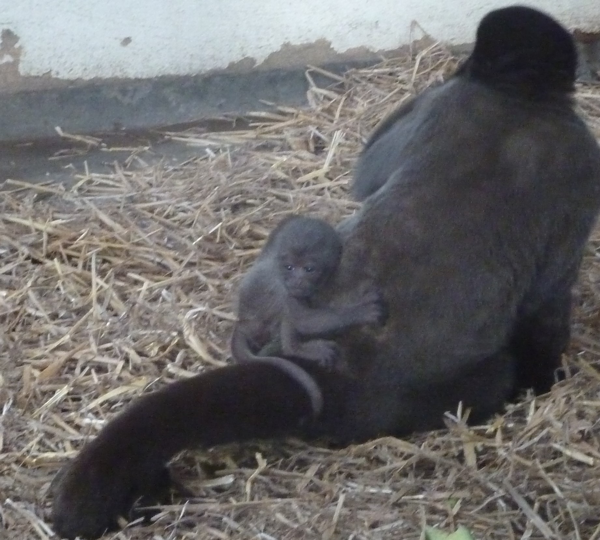
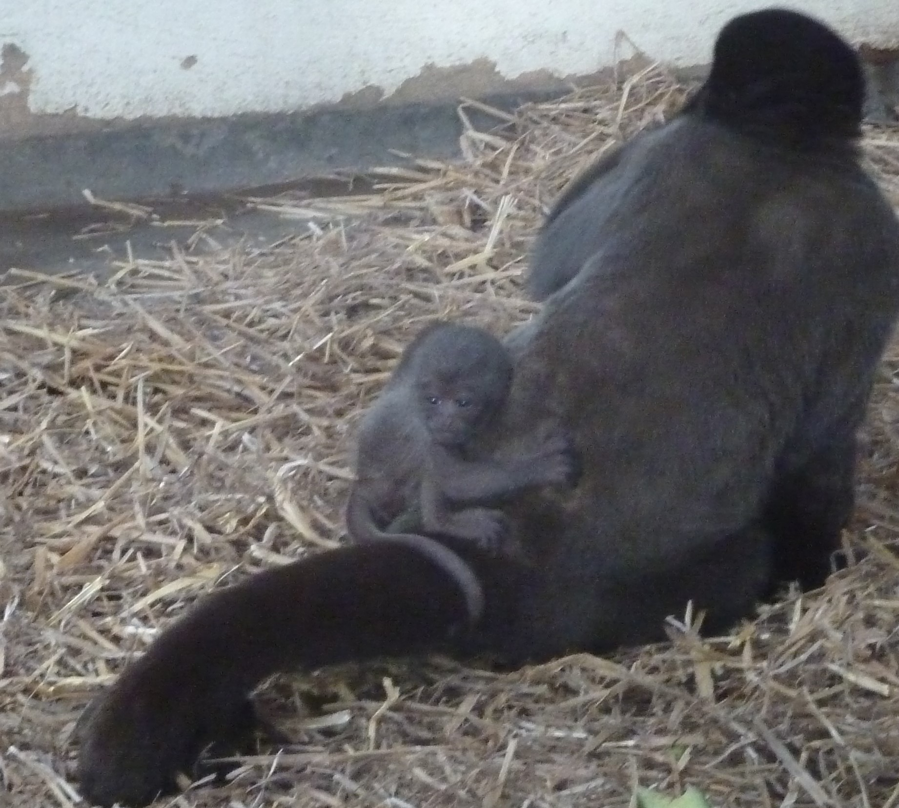
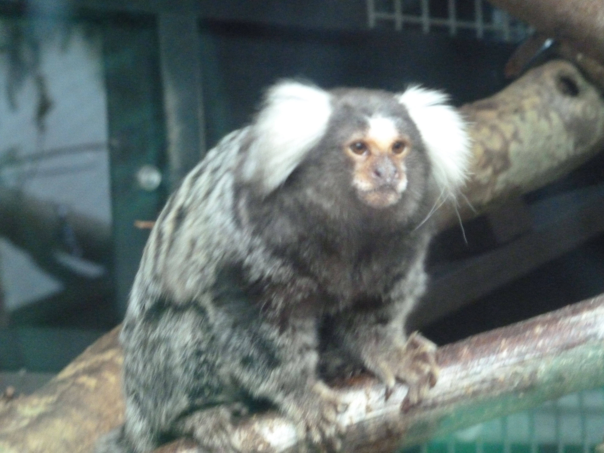
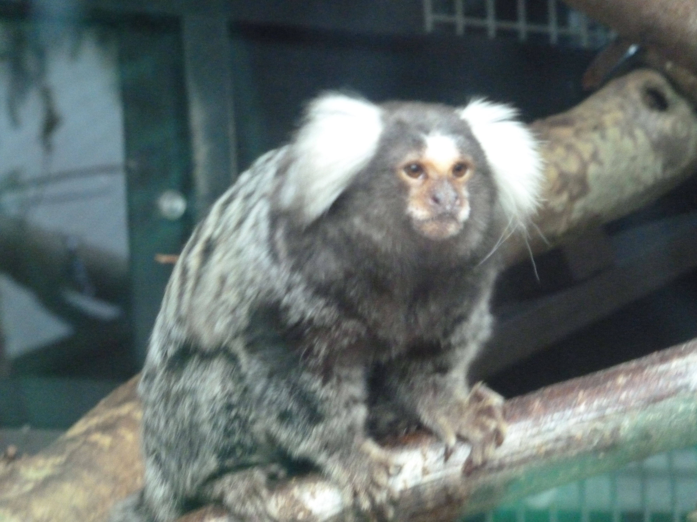
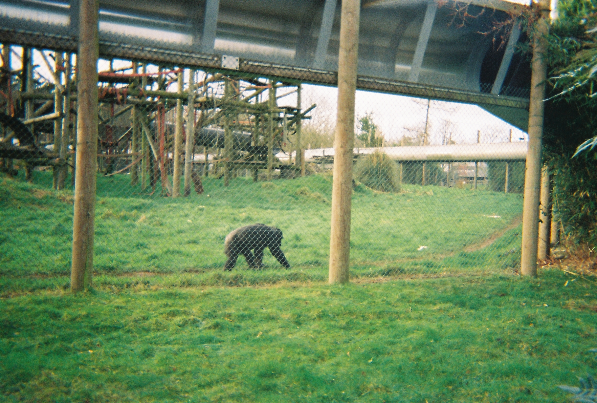
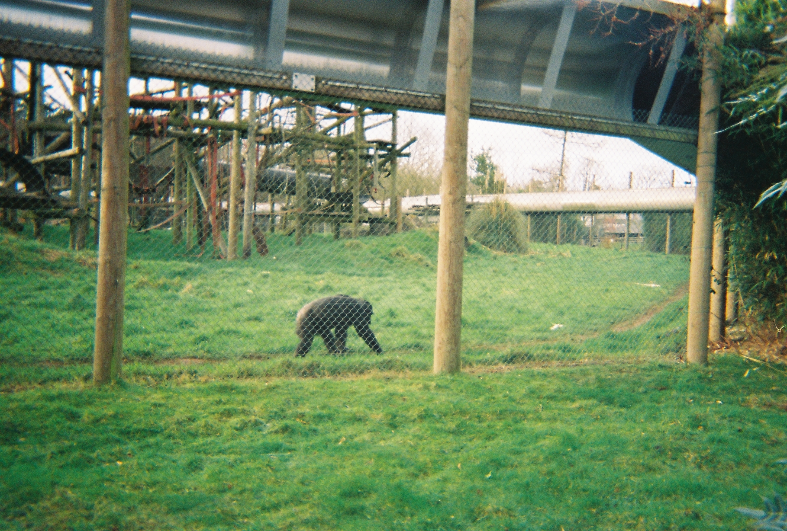

Who am I?
My name is Ash, I'm 25 years old, and I am an aspiring software engineer. While I was studying physics at UCL, I learned Python as part of PHAS0030 to model the orbits of planets. I became interested in pursuing coding further once I left, since the process of constant problem-solving appealed to me greatly.
I like to bake cakes. Here's one I made for a Christmas party a few years back, near the start of my baking journey.

I adore apes and monkeys alike. Here's some pictures I took at Monkey World, along with a bonus picture of the monkey paraphrenalia I have at home.
 



 

 
